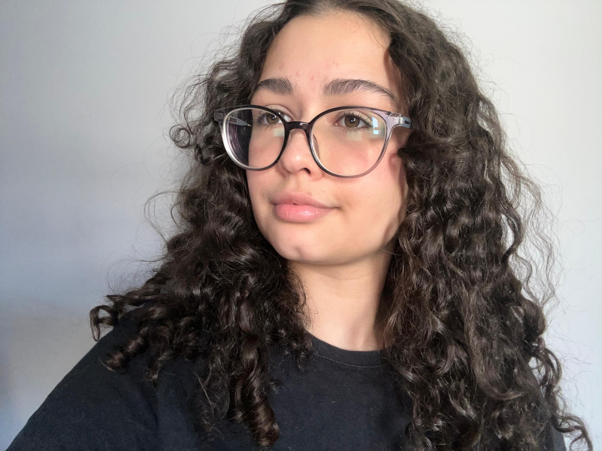

Projetos em Html,Css e Java Script!
Olá! Eu sou a Isabella Valim, mas pode me chamar de Bella! Sou estudante de Engenharia da Computação na Facens. Este site foi criado com o intutio de mostrar os projetos que eu desenvolvi em Java Script, Html e Css durante as aulas de Web Desing, além de outros projetos pessoais.Caso tenha alguma dúvida ou deseje entrar em contato, você pode acessar meu e-mail e LinkedIn na aba localizada na parte superior deste site.
Projeto 0 - Meu site pessoal
HomepageProjeto 1 - Formulários
1° Formulário2° Formulário